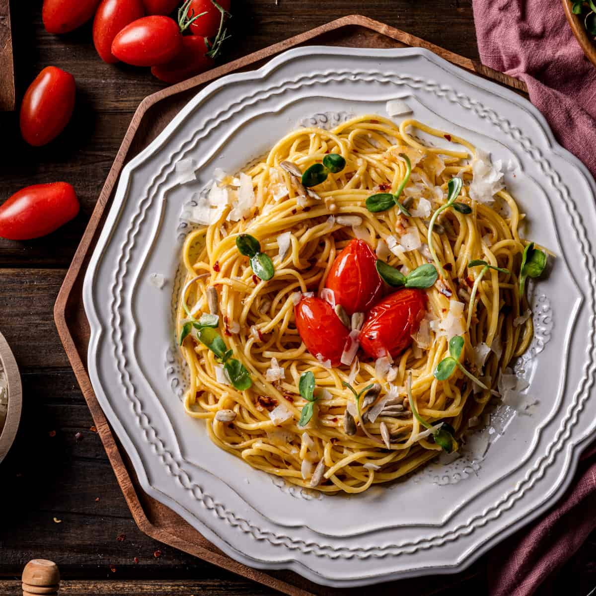

Home
Aglio Olio e Peperoncino

Description
Spaghetti aglio e olio is a pasta dish typical of the city of Naples, Italy. It is popular because it is simple to prepare and makes use of inexpensive, readily available ingredients that have long shelf lives in a pantry. The dish was once also known as vermicelli alla Borbonica.
Ingredients
- Dry Pasta, I used spaghetti here, which was great. A linguine, bucatini, fettuccine or even a capellini would work in its place.
- Fresh Garlic, I really recommend using fresh garlic that you peel and slice yourself as opposed to anything from a jar. A few fragrant, large garlic cloves are best.
- Olive Oil, The highest quality extra virgin olive oil that works within your budget is perfect for this dish. The taste of olive oil will be prevalent and you will definitely taste the difference. However, if something super high quality is not in the cards, this will by all means still be an incredibly delicious dish.
- Calabrian Chili Peppers, You can generally find jars of these in the ethnic foods aisle of your local grocery store. You can also purchase them online here. If you cannot find them, try hot cherry peppers, 1 teaspoon jarred crushed red pepper chili flakes, or fresh hot peppers like Fresno chilis in their place.
- Fresh Basil, If you can't find any good, fresh basil, I would omit it rather than use dried basil.
- Kosher Salt, Kosher salt is my preferred salt for all of my savory cooking. It's less salty per teaspoon than sea salt or table salt, making it easier to season properly and harder to oversalt your dish. This 3-pack lasts me a very long time.
- Parmesan Cheese, if desired. You can also use some pecorino cheese if you'd like. I think it's quite delicious with or without the cheese.
Steps
- Bring a large pot of water with a generous pinch of salt to a boil. Cook your spaghetti to al dente. Meanwhile, place two tablespoons of olive oil over medium-low heat in a large pan. Once just shimmering, add the garlic, chilis, and a pinch of salt. While the pasta is cooking, keep an eye on the garlic and chilis, stirring occasionally. The garlic is ready when it is softened and light golden brown but not crisp or burned.
- When the pasta is cooked, add about ¼ cup of the pasta water to the pan with the garlic, oil, and chilis. Drain the pasta.
- Stir the sauce to emulsify. Add in the drained pasta and remaining olive oil and continue to stir.
- Add the basil and give everything a nice toss, ensuring the pasta is coated evenly with the sauce.
- Plate the pasta. Add some freshly grated parmesan cheese and more fresh basil if desired.
Disclaimer
This website is created for learning and educational purposes only. Some content, including text and structure, is adapted from Two Cloves Kitchen. All rights to the original material belong to the respective owner. This project is not intended for commercial use or public distribution.